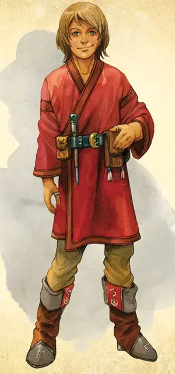

Ученик волшебника
Apprentice Wizard
Средний Гуманоид, любое мировоззрение

Класс Доспеха 10 (13 с доспехами мага)
Хиты 13 (3к8)
Скорость 30 футов
| мод | спас | ||
|---|---|---|---|
| СИЛ | 10 | +0 | +0 |
| ЛОВ | 10 | +0 | +0 |
| ТЕЛ | 10 | +0 | +0 |
| мод | спас | ||
|---|---|---|---|
| ИНТ | 14 | +2 | +2 |
| МДР | 10 | +0 | +0 |
| ХАР | 11 | +0 | +0 |
Навыки История +4, Магия +4
Чувства пассивное Восприятие 10
Языки Любой язык (обычно Общий)
Опасность 1/4 (50 опыта)
Бонус мастерства +2
Среда обитания Город
Действия
Магическая вспышка. Рукопашная или Дальнобойная атака заклинанием: +4 к попаданию, досягаемость 5 футов или дистанция 120 футов, одна цель. Попадание: 7 (1к10 + 2) урона силовым полем.
Использование заклинаний. Ученик волшебника накладывает одно из следующих заклинаний, используя Интеллект в качестве базовой характеристики (Сл спасброска от заклинаний 12):
• Неограниченно: волшебная рука [mage hand], фокусы [prestidigitation];
• 1/день каждое: огненные ладони [burning hands], маскировка [disguise self], доспехи мага [mage armor].
Описание
Волшебники
Волшебники стремятся к магической силе, изучая тайные тексты. Некоторые путешествуют по миру в поисках эзотерических томов, в то время как другие обучают младших волшебников или сотрудничают с коллегами для создания новых заклинаний.
Ученик волшебника
Ученики – новички среди заклинателей тайной магии, которые служат у более опытного волшебника или учатся в школе. Они выполняют чёрную работу, такую как готовка и уборка в обмен на обучение магии.